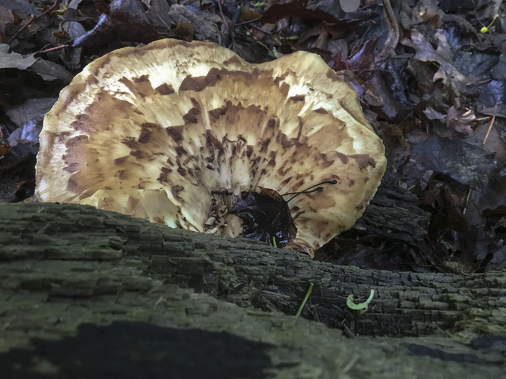

生态系统的结构
本期导读
组成成分 · 食物链 · 食物网

视频原话 · 导读3 句
- 同学们好！这节课梳理人教版选择性必修二第三章第一节——生态系统的结构。7.9s
- 高考常考生态系统组成成分的判断、食物链和食物网的分析，以及某种生物数量变化对其他生物的影响。9.9s
- 我们按七个考点梳理，每个考点都讲清楚怎么考、怎么做。5.6s
生态系统的概念01#
生物群落＋非生物环境相互作用 →生态系统
范围有大有小：生物圈是地球上最大的生态系统
自然生态系统：森林、草原、荒漠、湿地、海洋
人工生态系统：农田、人工林、果园、城市
易错
只有“全部生物”是群落；加上非生物环境才是生态系统
视频原话4 句
- 考点一，生态系统的概念。在一定空间内，由生物群落与它的非生物环境相互作用而形成的统一整体，叫做生态系统。11.7s
- 生态系统的空间范围有大有小，生物圈是地球上最大的生态系统。6.6s
- 生态系统可以分为自然生态系统，比如森林、草原、海洋；和人工生态系统，比如农田、果园、城市。10.4s
- 易错：生态系统 = 生物群落 + 非生物环境。只说“全部生物”是群落，不是生态系统。8.7s
四种组成成分02#
非生物的物质和能量
阳光、热能、水、空气、无机盐
生物生存的基础
生产者
绿色植物（自养生物）
生态系统的基石
消费者
主要是动物
加快物质循环；传粉、传播种子
分解者
主要是细菌和真菌
有机物 → 无机物
考法
基石：生产者；缺了会崩溃：生产者和分解者
视频原话5 句
- 考点二，生态系统的组成成分有四种。第一种，非生物的物质和能量，比如阳光、热能、水、空气、无机盐。11.2s
- 第二种，生产者，主要是绿色植物，属于自养生物。它把无机物转变成有机物，是生态系统的基石。9.9s
- 第三种，消费者，主要是动物。它能加快物质循环，还能帮助植物传粉和传播种子。8.3s
- 第四种，{分解者|brown}，主要是细菌和真菌。它把动植物遗体和动物排遗物中的有机物{分解成无机物|brown}。9.4s
- 考法：问哪种成分是生态系统的基石——生产者；哪种成分缺少了，生态系统就会崩溃——生产者和分解者。10.8s
成分判断的易错03#
植物 ≠ 生产者
菟丝子：寄生 → 消费者
动物 ≠ 消费者
蚯蚓、蜣螂：吃腐殖质、粪便 → 分解者
细菌 ≠ 分解者
硝化细菌：化能合成 → 生产者
寄生细菌 → 消费者
寄生细菌 → 消费者
解题方法
只看营养方式：自己合成有机物 → 生产者；以活的生物为食 → 消费者；以遗体、排遗物为食 → 分解者
试一试：只看营养方式，不看它是不是植物、动物或细菌。
- 1菟丝子缠绕在豆科植物上，从寄主获取有机物消费者：植物不等于生产者，菟丝子寄生，以活的生物为食。
- 2蚯蚓、蜣螂以土壤中的腐殖质和粪便为食分解者：动物不等于消费者，吃遗体、排遗物的是分解者。
- 3硝化细菌氧化氨释放能量，并利用这些能量合成有机物生产者：细菌不等于分解者，化能合成作用能自己制造有机物。
- 4寄生细菌生活在活细胞内，获取现成的有机物消费者：以活的生物为食，同样属于消费者。
视频原话5 句
- 考点三，成分判断的易错点。记住三个“不一定”。5.1s
- 植物不一定是生产者：菟丝子营寄生生活，属于消费者。5.7s
- 动物不一定是消费者：蚯蚓、蜣螂以腐殖质和粪便为食，属于分解者。7.2s
- 细菌不一定是分解者：硝化细菌能进行化能合成作用，属于生产者；寄生细菌属于消费者。9.1s
- 解题方法：只看营养方式。能自己合成有机物的是生产者；以活的生物为食的是消费者；以遗体和排遗物为食的是分解者。12.0s
成分之间的关系04#
考法
生产者和分解者是联系生物群落和非生物环境的两大“桥梁”；消费者能加快物质循环
视频原话4 句
- 考点四，各组成成分之间的关系。生产者通过光合作用，把非生物环境中的物质和能量引入生物群落。10.0s
- 消费者以生产者为食，有机物沿着食物链传递。5.0s
- 生产者和消费者的遗体、排遗物被{分解者|brown}分解，物质又回到非生物环境中。7.5s
- 考法：生产者和分解者是联系生物群落和非生物环境的两大“桥梁”；消费者不是必需的，但能加快物质循环。10.6s
食物链05#
食物链：生态系统中各种生物因食物关系形成的一种联系
易错
食物链只有生产者和消费者，不含分解者和非生物的物质和能量；一般不超过五个营养级
视频原话4 句
- 考点五，食物链。生态系统中各种生物因食物关系而形成的一种联系，叫做食物链。8.8s
- 比如：草、蝗虫、青蛙、蛇、鹰。起点是生产者，终点是不被其他动物捕食的最高营养级。10.1s
- 生产者是第一营养级，初级消费者是第二营养级，以此类推。消费者的级别 = 营养级数 − 1。9.9s
- 易错：食物链中只有生产者和消费者，不包括分解者和非生物的物质和能量；食物链一般不超过五个营养级。10.1s
食物网06#
考法
三个必考动作：数食物链（从生产者数到最高营养级）、找营养级、判断种间关系
视频原话5 句
- 考点六，食物网。许多食物链彼此相互交错，连接成复杂的营养关系，就是食物网。8.7s
- 数食物链：从生产者出发，沿箭头一直数到最高营养级，不能中途停下。这个食物网有五条食物链。10.1s
- 同一种生物可以占不同的营养级：鹰在草、鼠、鹰中是第三营养级，在草、鼠、蛇、鹰中是第四营养级。10.9s
- 两种生物之间可能既有捕食，又有竞争：鹰吃蛇，鹰和蛇又都吃鼠。7.2s
- 考法：食物网越复杂，生态系统抵抗外界干扰的能力越强。数食物链、找营养级、判断种间关系，是三个必考动作。11.6s
数量变化分析07#
第一营养级减少
其他生物都因食物减少而减少
天敌减少
被捕食者先增加，后因种内竞争减少，最后趋于稳定
中间营养级减少（如蛇）
鹰更多捕食鼠，营养级降低、获能更多 → 鹰增加
解题方法
先看处在哪个营养级；中间环节变化时，抓住食物来源是否多样和营养级越低获能越多
视频原话5 句
- 考点七，食物网中生物数量变化的分析。4.2s
- 第一营养级减少：其他生物都会因食物减少而减少。5.3s
- 天敌减少：被捕食者先增加，后因种内竞争加剧而减少，最后趋于稳定。7.6s
- 中间营养级减少：比如蛇减少，鹰可以更多地捕食鼠，营养级降低，获得的能量反而更多，所以鹰的数量增加。10.5s
- 解题方法：先看减少的生物处在哪个营养级；中间环节变化时，抓住“食物来源是否多样”和“营养级越低获得的能量越多”两点分析。12.5s
易错速查✓
先自己判断，再点按钮查看对错与解析。
- 1生物圈是地球上最大的生态系统说法正确。
- 2细菌都是分解者说法错误：硝化细菌是生产者，寄生细菌是消费者
- 3蚯蚓、蜣螂属于分解者说法正确。
- 4食物链中包含分解者说法错误：食物链只含生产者和消费者
- 5同一生物在食物网中只占一个营养级说法错误：可以占不同的营养级
- 6食物网越复杂，抵抗干扰的能力越强说法正确。
成分看营养方式，链条从生产者数起！
视频原话 · 易错速查5 句
- 最后，用六道判断题检验一下。3.6s
- 判断一：生物圈是地球上最大的生态系统？对。判断二：细菌都是分解者？错，硝化细菌是生产者。11.5s
- 判断三：蚯蚓、蜣螂属于分解者？对。判断四：食物链中包含分解者？错，只含生产者和消费者。11.6s
- 判断五：同一生物在食物网中只占一个营养级？错。判断六：食物网越复杂，抵抗干扰的能力越强？对。11.6s
- 七个考点串成一条线：成分看营养方式，链条从生产者数起。我们下期再见！8.1s
图片来源
图片来源：Wikimedia Commons —— The Other 95%《Labagh Woods Bracket Fungi on Fallen Tree II》CC BY-SA 4.0
Photo: The Other 95%, CC BY-SA 4.0